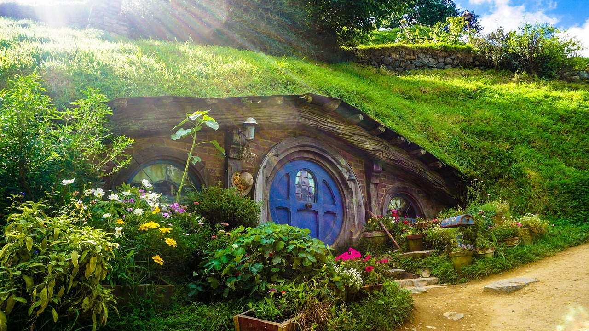
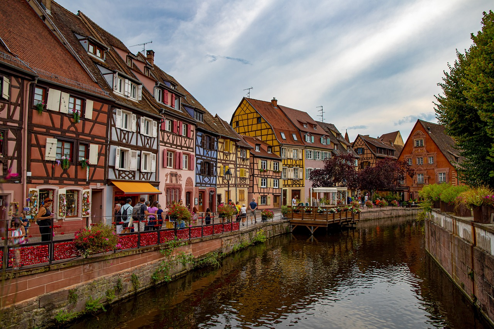
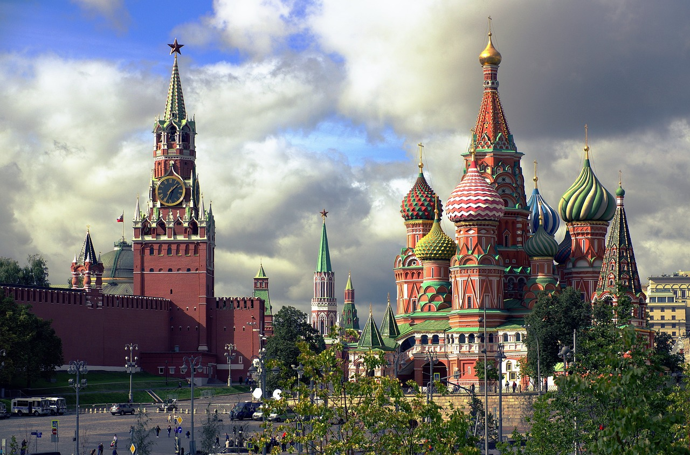
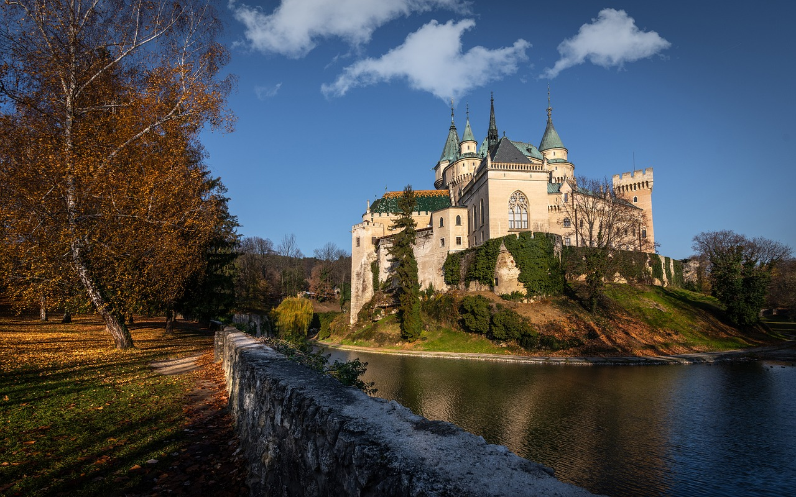
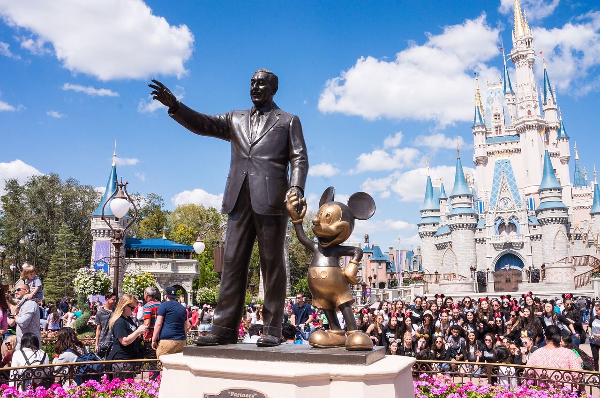

 Para os fãs do clássico "O Senhor do Anéis" este lugar é um verdadeiro conto de fadas, um dos lugares no mundo usados em ser de filmagens por ser encatador, está localizado em colinas verdejantes e exuberentes, com tocas de hobbut coloridos, esse set de filmagem esta aberto para visitas ou você pode se hospedar em uma dessas "tocas". Ás melhores épocas para visitar é sem dúvidas de novembro a março, pois os passeios ao ar livre duram o dia todo e o clima é mais agradável.
Algumas caractériscas únicas desse local, pontos positivos e negativos estarão sendo pontuadas abaixo, na tabela:
| Características | Pontos Positivos | Pontos Negativos |
|---|---|---|
| Cenário Pitoresco | Beleza Natural | Lotado em Temporadas de Pico |
| Atenção aos Detalhes | Cultura e Entretenimento | Preços Elevados |
| Experiência Imersiva | Atração Turística | Restrições de Acesso |
 Uma cidade que aparenta ter saído do filme "A Bela e a Fera", uma deslumbrante região francesa que contém aldeias provinciais que inspiram diversos contos de fedas, casa coloridas, canais de sonho, edifícios coloridos, você pode encontrar até torres de contos de fada, incrível né? Ás melhores epócas para visitar esse belíssimo lugar é na primavera entre abril e junho, pois às aldeias estarão cheias de flores, vinhas verdes, tempo fresco e é possível explorar a magia desta aldeia em sua totalidade.
Algumas caractériscas únicas desse local, pontos positivos e negativos estarão sendo pontuadas abaixo, na tabela:
| Características | Pontos Positivos | Pontos Negativos |
|---|---|---|
| Cultura e História Rica | Turismo Cultural | Conflito Cultural |
| Paisagens Encantadoras | Rota dos Vinhos | Clima Instável |
| Gastronomia Distinta | Qualidade de Vida | Turismo em Massa |
 A capital da Rússia abriga uma das arquiteturas mais encantadoras do mundo, é um sonho e verdadeiramente mágicos, muitos edifícios e igrejas em Moscou forma inspiradas em antigos contos de fadas, você imaginava isso? A praça vermelha é um dos locais mais famosos e visitados, a catedral de São Basílo, chama atenção a quilômetros de distância, além dos museus e outros ambientes mágicos que carregam consigo uma bela história que você pode explorar, a melhor época do ano para visitar Moscou é abril e maio, pois está em baixa temporada, o que possibilita conhecer os pontos com mais calma, porém uma alternativa para aqueles que gostam é no inverno, onde ás ruas ficam exuberantemente decoradas e as camadas de neve tornam a paisagem uma fantasia.
Algumas caractériscas únicas desse local, pontos positivos e negativos estarão sendo pontuadas abaixo, na tabela:
| Características | Pontos Positivos | Pontos Negativos |
|---|---|---|
| Rica História e Cultura | Diversão para todas as idades | Trânsito Intenso |
| Arquitetura Impressionante | Centro Econômico e Financeiro | Custo Elevado |
| Vida Noturna Vibrante | Transporte Eficiente | Barreiras Linguísticas |
 O que nos desperta mais uma sensação de mágia do que um castelo, não é mesmo? O Castelo de Bojnice, situado no alto de uma colina, é considerado o castelo mais bonito da Europa Central, por sua beleza e arquitetura formidável,inspirado nos estilos arquitetônicos românico, renascentista e gótico, é possível fazer um tour por seus corredores, salas imperiais e o famoso parque do castelo. A melhor época para visitar é de maio a setembro, por conta do clima agradável. Como os palácios dos desenhos, o Castelo de Bjnice carrega uma história de muitos séculos.
Algumas caractériscas únicas desse local, pontos positivos e negativos estarão sendo pontuadas abaixo, na tabela:
| Características | Pontos Positivos | Pontos Negativos |
|---|---|---|
| Arquitetura Medieval | Atração Turística Popular | Lotado em Temporadas de Pico |
| Localização Pitoresca | Eventos Culturais | Restrições de Acesso |
| Decoração Interior Rica | Visitas Guiadas | Acessibilidade Limitada |
 Um dos parques mais fomosos da história por ser responsável por carregar em sua essência sonhos, histórias, um lugar mágico e que muitos já sonhoram em conhecer em algum momento da vida, o Walt Disney World, localizado em Orlando, Flórida é um lugar verdadeiramente de conto de fadas, aqueles que vão não se arrependem e relatam ser uma experiência única, imagina só ver de pertinho os personagens que você amava quando criança? Ou sentir essa sensação incrível, a Disney é conhecida por ser capaz de fazer que jamais seja esquecido as experiências únicas e mágicas vivenciadas nesse lugar.
Algumas caractériscas únicas desse local, pontos positivos e negativos estarão sendo pontuadas abaixo, na tabela:
| Características | Pontos Positivos | Pontos Negativos |
|---|---|---|
| Magia e Encanto | Experiência Imersiva | Lotado |
| Variedade de Atrações | Atendimento ao Cliente | Preços Elevados |
| Serviço de Hospedagem | Entretenimento de Qualidade | Clima Instável |